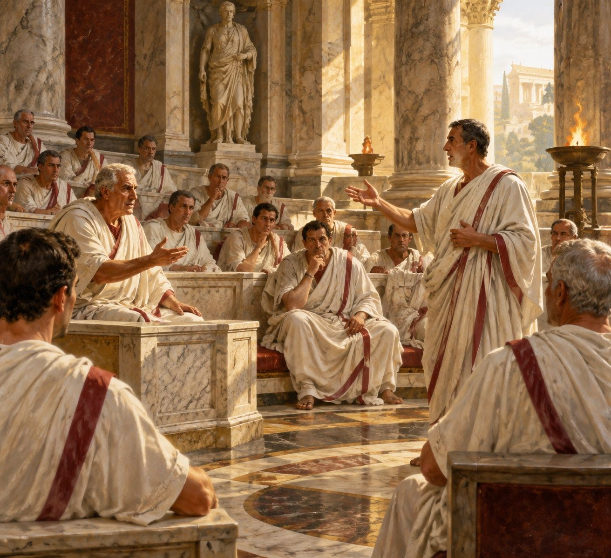

Segundo a lenda, Roma foi fundada em 21 de abril de 753 a.C.
pelos irmãos gêmeos Rômulo e Remo, filhos do deus Marte
e da princesa Reia Sílvia. O rei Amúlio, com medo de perder o trono,
mandou jogar os bebês no rio Tibre. Eles foram salvos por uma
loba, que os amamentou, e depois criados pelo pastor Fáustulo.
Já adultos, os irmãos decidiram fundar uma cidade, mas brigaram sobre quem a
governaria. Rômulo matou Remo, tornou-se o primeiro rei e deu seu nome à cidade:
Roma. Outra lenda, contada pelo poeta Virgílio na Eneida,
diz que os romanos descendiam de Eneias, um herói que fugiu de Troia.
Você sabia?
A sigla SPQR significa "Senatus Populusque Romanus",
que quer dizer "O Senado e o Povo Romano". Ela aparecia em moedas,
bandeiras e prédios — e ainda aparece nos bueiros de Roma hoje!
Os romanos contavam os anos a partir da fundação da cidade:
"ab urbe condita" (desde a fundação da cidade).
O que dizem os historiadores
Na verdade, Roma surgiu da união de pequenas aldeias de pastores e agricultores
que viviam sobre as sete colinas às margens do rio Tibre, na região
do Lácio, no centro da atual Itália. O local era bom porque
tinha água, terra fértil, era fácil de defender e ficava perto do mar.
A península Itálica era habitada por vários povos que influenciaram Roma:
Latinos: pastores e agricultores, os primeiros habitantes de Roma. Deles vem a língua latina.
Sabinos: vizinhos que se misturaram aos latinos.
Etruscos: viviam ao norte. Ensinaram aos romanos técnicas de construção (como o arco), a drenagem de pântanos e rituais religiosos.
Gregos: tinham colônias no sul da Itália (a Magna Grécia). Influenciaram a religião, a arte, a filosofia e o alfabeto dos romanos.
Os Três Períodos
A história de Roma costuma ser dividida em três grandes fases:
I
Monarquia
753 a.C. – 509 a.C.
Governo de reis, ajudados pelo Senado e por uma assembleia.
II
República
509 a.C. – 27 a.C.
Governo do Senado e de magistrados eleitos, como os cônsules.
III
Império
27 a.C. – 476 d.C.
Governo de um imperador com poder quase absoluto.
Monarquia (753 a.C. – 509 a.C.)
Nesse período Roma era uma cidade pequena. O rei era chefe militar,
juiz e sacerdote. O cargo não passava de pai para filho: o rei era escolhido.
Ele era ajudado por:
Senado: conselho de anciãos das famílias mais importantes (os patrícios).
Assembleia Curiata: reunião dos cidadãos que aprovava ou rejeitava as leis.
A tradição fala em sete reis:
Rômulo – fundador da cidade e criador do Senado.
Numa Pompílio – sabino, organizou a religião e o calendário.
Túlio Hostílio – rei guerreiro, conquistou a cidade de Alba Longa.
Anco Márcio – fundou o porto de Óstia.
Tarquínio Prisco – primeiro rei etrusco; construiu o Circo Máximo e a Cloaca Máxima (esgoto).
Sérvio Túlio – dividiu a população pela riqueza e construiu muralhas.
Tarquínio, o Soberbo – governou de forma violenta e autoritária.
Em 509 a.C. os patrícios se revoltaram e expulsaram Tarquínio, o Soberbo.
A partir daí os romanos passaram a odiar a ideia de ter um rei, e começou a República.
A Sociedade Romana
Patrícios
Grandes proprietários de terras e de rebanhos. Eram a elite e, no início, os únicos que podiam ocupar cargos políticos e religiosos.
Plebeus
A maioria da população: camponeses, artesãos e comerciantes. Eram livres, pagavam impostos e serviam no exército, mas não tinham direitos políticos no início.
Clientes
Pessoas pobres que se ligavam a um patrício (o patrono). Recebiam proteção e ajuda e, em troca, davam apoio político e serviços.
Escravizados
Geralmente prisioneiros de guerra ou pessoas que não pagavam dívidas. Não tinham direitos e eram tratados como propriedade. Alguns conseguiam a liberdade e viravam libertos.
A família
A família era chefiada pelo pater familias (pai de família), o homem mais
velho, que tinha poder total sobre a esposa, os filhos e os escravizados.
As mulheres não podiam votar nem ocupar cargos políticos. Mas as mulheres
ricas cuidavam da casa, educavam os filhos e algumas tinham bastante influência.
Revolta de Espártaco
Em 73 a.C. o gladiador Espártaco liderou a maior revolta de
escravizados da história de Roma, reunindo cerca de 70 mil pessoas. Ele foi derrotado
em 71 a.C., e 6 mil revoltosos foram crucificados.
República (509 a.C. – 27 a.C.)
República vem do latim res publica, que significa "coisa pública".
O poder deixou de ficar nas mãos de uma só pessoa e passou a ser dividido entre
várias instituições — mas, na prática, quem mandava eram os patrícios.
Como o governo funcionava
Senado: o órgão mais poderoso. Os senadores tinham cargo vitalício e cuidavam das finanças, da guerra e da política externa.
Cônsules: dois, eleitos por um ano. Comandavam o exército e o governo. Um podia vetar o outro.
Pretores: cuidavam da justiça.
Censores: faziam o censo (contagem da população e da riqueza).
Questores: cuidavam do dinheiro público.
Edis: cuidavam da cidade, das ruas, dos mercados e das festas.
Ditador: em caso de guerra ou crise grave, recebia poder total por no máximo 6 meses.
Assembleias: reuniões dos cidadãos que votavam leis e elegiam magistrados.
A luta dos plebeus
Os plebeus lutaram por cerca de 200 anos por mais direitos. Sua principal arma era a
greve: eles saíam da cidade e se recusavam a trabalhar e a lutar no exército.
Com isso conquistaram:
494 a.C. – Tribunos da Plebe: representantes que podiam vetar leis contrárias aos plebeus.
450 a.C. – Lei das Doze Tábuas: as primeiras leis escritas de Roma. Antes, só os patrícios conheciam as leis e as interpretavam como queriam.
445 a.C. – Lei Canuleia: permitiu o casamento entre patrícios e plebeus.
367 a.C. – Leis Licínias: um dos cônsules passou a poder ser plebeu.
326 a.C. – Fim da escravidão por dívidas.
Conquistas e Guerras Púnicas

Até 272 a.C. Roma conquistou toda a península Itálica. Depois entrou em
conflito com Cartago, cidade do norte da África que dominava o comércio no
Mar Mediterrâneo. Os romanos chamavam os cartagineses de púnicos, por isso as
guerras ficaram conhecidas como Guerras Púnicas:
1ª Guerra (264–241 a.C.): disputa pela ilha da Sicília. Roma vence e cria sua frota de navios.
2ª Guerra (218–201 a.C.): o general cartaginês Aníbal atravessa os Alpes com cerca de 37 elefantes e vence os romanos na Batalha de Canas (216 a.C.). Mas o general romano Cipião, o Africano ataca Cartago e derrota Aníbal na Batalha de Zama (202 a.C.).
3ª Guerra (149–146 a.C.): Roma destrói Cartago completamente e escraviza sua população.
No mesmo período Roma conquistou a Grécia, a Macedônia, a Hispânia (Espanha)
e partes da Ásia. O Mediterrâneo passou a ser chamado de "Mare Nostrum" (nosso mar).
Consequências das conquistas
Chegaram muitas riquezas e milhares de escravizados a Roma.
Os patrícios ficaram mais ricos e criaram grandes fazendas, os latifúndios.
Os pequenos camponeses perderam suas terras, foram para a cidade e ficaram pobres e sem emprego.
Os generais ficaram muito poderosos, porque os soldados eram mais fiéis a eles do que ao Senado.
A Crise da República e Júlio César
133–121 a.C.
Os irmãos Graco (Tibério e Caio), tribunos da plebe, propõem uma reforma agrária para dar terras aos pobres. Os dois são assassinados a mando de senadores.
107 a.C.
O general Mário reforma o exército: os pobres passam a ser soldados profissionais e pagos.
88–82 a.C.
Guerra civil entre Mário (apoiado pelo povo) e Sula (apoiado pelo Senado). Sula vence e vira ditador.
60 a.C.
Primeiro Triunvirato: acordo entre três líderes para dividir o poder: Júlio César, Pompeu e Crasso.
58–50 a.C.
César conquista a Gália (atual França) e fica rico, famoso e muito popular.
49 a.C.
César atravessa o rio Rubicão com seu exército, desobedecendo o Senado, e diz: "Alea jacta est" ("A sorte está lançada"). Ele vence Pompeu na guerra civil.
44 a.C.
César se torna ditador vitalício. Com medo de que ele virasse rei, senadores liderados por Bruto e Cássio o assassinam com 23 facadas, nos Idos de Março (15 de março).
43 a.C.
Segundo Triunvirato:Otávio (sobrinho e filho adotivo de César), Marco Antônio e Lépido.
31 a.C.
Otávio vence Marco Antônio e a rainha do Egito Cleópatra na Batalha de Áccio. O Egito vira província romana.
27 a.C.
O Senado dá a Otávio o título de Augusto ("sagrado"). Começa o Império.
Você sabia?
César criou o calendário juliano, com 365 dias e ano bissexto. O mês de julho tem esse nome por causa dele, e agosto por causa de Augusto!
Império (27 a.C. – 476 d.C.)
Augusto manteve o Senado e as aparências da República, mas na prática concentrava
todo o poder: era chefe do exército, da religião e do governo. Ele se chamava de
Princeps ("primeiro cidadão").
A Pax Romana
De 27 a.C. até cerca de 180 d.C. houve a Pax Romana (Paz Romana): cerca de
200 anos de relativa paz e prosperidade. O comércio cresceu, foram construídas estradas,
cidades, templos e aquedutos, e a cultura floresceu.
Imperadores importantes
Augusto (27 a.C.–14 d.C.): primeiro imperador. Durante seu governo nasceu Jesus Cristo, na Judeia, uma província romana.
Calígula (37–41): famoso por ser cruel e excêntrico.
Nero (54–68): acusado de causar o grande incêndio de Roma (64 d.C.) e de perseguir os cristãos.
Vespasiano (69–79): começou a construir o Coliseu.
Trajano (98–117): sob ele o império chegou ao seu maior tamanho, com cerca de 5 milhões de km² e 60 milhões de habitantes.
Adriano (117–138): construiu a Muralha de Adriano, na Britânia (Inglaterra).
Marco Aurélio (161–180): o "imperador filósofo"; com sua morte termina a Pax Romana.
Diocleciano (284–305): criou a Tetrarquia, dividindo o governo entre quatro governantes.
Constantino (306–337): primeiro imperador cristão. Fundou Constantinopla (atual Istambul).
Teodósio (379–395): tornou o cristianismo a religião oficial e dividiu o império.
O Cristianismo
O cristianismo surgiu na Judeia no século I. No início os cristãos foram perseguidos,
porque se recusavam a adorar o imperador e os deuses romanos. Mesmo assim, a religião se
espalhou, principalmente entre os pobres e os escravizados.
313 d.C. – Édito de Milão: Constantino dá liberdade de culto aos cristãos.
380 d.C. – Édito de Tessalônica: Teodósio torna o cristianismo a religião oficial do império.
>
O Exército Romano
O exército foi o grande responsável pelas conquistas romanas. Ele era dividido em
legiões, cada uma com cerca de 5 mil soldados (os legionários).
A legião era dividida em centúrias, comandadas por um centurião.
Os soldados serviam por cerca de 25 anos e, ao final, recebiam terras ou dinheiro.
Eles usavam capacete, armadura, escudo (scutum), espada curta (gladius) e lança (pilum).
Uma tática famosa era a formação tartaruga (testudo): os soldados juntavam
os escudos em volta e acima do grupo para se proteger de flechas.
Você sabia?
A palavra "salário" pode vir de sal: diz-se que parte do pagamento dos soldados era usada para comprar sal, muito valioso na época.
Os soldados também construíam estradas, pontes e acampamentos.
Cultura e Cotidiano
🏛️ Religião
Os romanos eram politeístas (acreditavam em vários deuses), muitos deles
adaptados dos deuses gregos. Também cultuavam os lares (protetores da casa)
e, no Império, o próprio imperador era adorado como um deus.
⚔️ Pão e Circo
Para manter o povo calmo, os governantes distribuíam trigo e ofereciam espetáculos:
a política do "pão e circo". No Coliseu (80 d.C.), cerca de
50 mil pessoas viam lutas de gladiadores e de animais. No
Circo Máximo, cerca de 150 mil assistiam às corridas de bigas.
📜 Língua
Os romanos falavam latim. Dele nasceram as línguas neolatinas:
português, espanhol, italiano, francês e romeno. Também usavam os
algarismos romanos (I, V, X, L, C, D, M).
Os deuses romanos
Deus romano
O que representava
Equivalente grego
Júpiter
Rei dos deuses, céu e raios
Zeus
Juno
Rainha dos deuses, casamento
Hera
Marte
Guerra
Ares
Vênus
Amor e beleza
Afrodite
Netuno
Mar
Poseidon
Minerva
Sabedoria
Atena
Mercúrio
Comércio e mensageiro
Hermes
Baco
Vinho e festas
Dionísio
Grandes Engenheiros
Os romanos construíram aquedutos, que levavam água por
quilômetros até as cidades, e mais de 80 mil km de estradas de pedra.
Daí vem a frase: "Todos os caminhos levam a Roma".
Usavam muito o arco e a abóbada, e inventaram um
concreto tão resistente que muitas construções estão de pé até hoje, como o
Panteão, cuja cúpula tem mais de 1.800 anos.
Também construíram termas, esgotos, pontes, teatros, anfiteatros e arcos do triunfo.
⚖️ Direito Romano
O maior legado dos romanos. Começou com a Lei das Doze Tábuas e foi reunido mais tarde no Código de Justiniano. Ele é a base das leis do Brasil e de muitos países.
🛁 Termas
Banhos públicos com piscinas quentes, mornas e frias. Eram lugares para tomar banho, conversar, fazer exercícios e negócios.
✒️ Literatura
Virgílio (Eneida), Ovídio (Metamorfoses), Cícero (orador) e os historiadores Tito Lívio e Tácito.
🍇 Alimentação
A base era trigo (pão e mingau), azeite de oliva e vinho. Os ricos faziam grandes banquetes deitados em sofás; os pobres comiam o trigo distribuído pelo governo.
🏠 Moradia
Os ricos moravam em casas grandes chamadas domus. Os pobres viviam em prédios de vários andares, as ínsulas, que pegavam fogo e desabavam com facilidade.
💰 Economia
Baseada na agricultura, no comércio pelo Mediterrâneo, nos impostos das províncias e no trabalho escravo. A moeda principal era o denário.
A Queda do Império
Por que o Império caiu?
Não houve um único motivo, mas vários problemas que se juntaram a partir do século III (a chamada Crise do Século III):
Fim das conquistas: sem novas guerras, chegavam menos escravizados e riquezas.
Crise econômica: menos produção, impostos altos e moedas que perdiam valor (inflação).
Crise política: entre 235 e 284 d.C. Roma teve cerca de 26 imperadores, muitos assassinados.
Tamanho do império: era muito difícil defender fronteiras tão grandes.
Ruralização: as pessoas saíram das cidades para o campo em busca de proteção e trabalho, nas vilas. Os trabalhadores presos à terra eram os colonos — origem dos servos da Idade Média.
Invasões: povos germânicos, chamados de "bárbaros" pelos romanos (visigodos, ostrogodos, vândalos, francos, entre outros), fugindo dos hunos, entraram no território.
330 d.C.
Constantino transfere a capital para Constantinopla.
395 d.C.
Teodósio divide o império em Império Romano do Ocidente (capital Roma, depois Ravena) e Império Romano do Oriente (capital Constantinopla).
410 d.C.
Os visigodos, liderados por Alarico, saqueiam Roma.
455 d.C.
Os vândalos saqueiam Roma novamente.
476 d.C.
O chefe germânico Odoacro derruba o último imperador do Ocidente, Rômulo Augusto. Fim da Roma Antiga e início da Idade Média.
1453 d.C.
O Império Romano do Oriente (Bizantino) dura até a tomada de Constantinopla pelos turcos otomanos, marcando o fim da Idade Média.
O Legado de Roma
Muitas coisas do nosso dia a dia vieram dos romanos:
Língua: o português vem do latim.
Leis: o Direito brasileiro se baseia no Direito Romano.
Política: palavras como república, senado, senador e cidadão.
Calendário: os nomes dos meses (janeiro vem do deus Jano, março de Marte, julho de Júlio César, agosto de Augusto).
Religião: o cristianismo se espalhou pelo mundo a partir do Império Romano.
Arquitetura: arcos, cúpulas, colunas e o concreto.
Números romanos: usados até hoje em relógios, capítulos de livros e séculos.
Quiz: Teste seus Conhecimentos
Responda as 10 perguntas e clique em "Ver resultado".